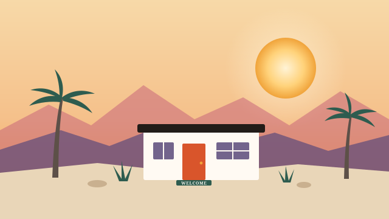

Welcome to the Coachella Valley.
Just moved here, or back for the season? This is the guide we wish everyone got on day one: who to call for power, water, trash and internet in your town, how to forward your mail, DMV deadlines, schools, doctors, and how to live with the heat.

Start here: your first two weeks
Whether you bought a house, signed a lease or just closed on a winter place, this is the short list. Each item is explained further down.
- Turn on power, water, gas and trash before move-in day. Your providers depend on your exact address (see the table).
- Forward your mail with USPS (permanent or seasonal).
- Set up internet, and book the install early in the fall, when snowbirds arrive (options).
- Get a California driver's license within 10 days and register your car within 20 days if you're becoming a resident (DMV).
- Register to vote at your new address.
- Get your AC checked if it's spring or summer. Here, that's not optional (heat).
- Find a doctor, dentist and vet before you need one (health).
Mail: change of address and seasonal forwarding
Moving here for good
File a permanent change of address at USPS Mover's Guide. Online there's a small identity-check fee, or you can fill out a free form at any post office. Then update your address with your bank, credit cards, insurance and employer. Medicare uses the address on file with Social Security, so change it at ssa.gov.
Here for the season
- Temporary forwarding: set a start and an end date, and USPS forwards your mail to the valley, then stops on its own. It runs from 15 days up to a year in total. File it at usps.com.
- Premium Forwarding Service: for a weekly fee, USPS boxes up all your mail and ships it to you once a week by Priority Mail, for two weeks up to a year. It can't run at the same time as regular forwarding or a mail hold. Details at usps.com.
- Hold Mail: for short trips, the post office holds your mail for 3 to 30 days. Schedule it at usps.com.
Utilities: who to call in your town
This is the part that surprises people. Your providers follow old district lines, not city limits, so two homes in the same city can have different electric or water companies. Find your town below, then confirm your exact address with the provider before you call to start service.
Natural gas is SoCalGas everywhere in the valley. Electric is either Southern California Edison (SCE), mostly in the west and middle of the valley, or the Imperial Irrigation District (IID), mostly in the east.
| Town | Electric | Water | Trash | Public schools |
|---|---|---|---|---|
| Palm Springs | SCE | Desert Water Agency | Palm Springs Disposal Services | Palm Springs Unified |
| Cathedral City | SCE | Desert Water Agency or CVWD | Burrtec | Palm Springs Unified |
| Desert Hot Springs | SCE | Mission Springs Water District | Desert Valley Disposal | Palm Springs Unified |
| Thousand Palms | SCE or IID (check) | CVWD | Burrtec | Palm Springs Unified |
| Rancho Mirage | SCE (mostly) | CVWD | Burrtec | Palm Springs Unified (most) or Desert Sands Unified |
| Palm Desert | SCE (mostly) | CVWD | Burrtec | Desert Sands Unified; north of Frank Sinatra Dr: Palm Springs Unified |
| Indian Wells | SCE or IID (check) | CVWD | Burrtec | Desert Sands Unified |
| La Quinta | IID (mostly) | CVWD | Burrtec | Desert Sands Unified |
| Bermuda Dunes | IID | CVWD or Myoma Dunes Water Co. | Burrtec | Desert Sands Unified |
| Indio | IID | Indio Water Authority (some areas CVWD) | Burrtec | Desert Sands Unified |
| Coachella | IID | City of Coachella | Burrtec | Coachella Valley Unified |
| Thermal and Mecca | IID | CVWD | Burrtec | Coachella Valley Unified |
Bulky item pickup and recycling rules vary by city. Your trash hauler's website has your pickup day. In Palm Desert, La Quinta, Indian Wells, Rancho Mirage, Cathedral City, Indio, Coachella and the unincorporated areas, Burrtec's customer service number is (760) 340-2113.
Internet, TV and phone
Service changes street by street, so start with the FCC National Broadband Map. Type in your address and it lists every provider that says it serves your home, with speeds. Around the valley, the usual options are cable, fiber or DSL where it's available, 5G home internet from the big cell carriers, and satellite such as Starlink for homes off the wired grid.
Tip: installers get busy in October and November when seasonal residents come back, so book early. If you're a snowbird, ask whether your provider offers a seasonal or vacation plan before you cancel.
Driver's license, car registration and voting
- Driver's license: the DMV says new residents have 10 days to get a California license.
- Car registration: register an out-of-state vehicle within 20 days of becoming a resident.
- Moved within California? Give the DMV your new address within 10 days.
- Valley DMV offices: 950 N Farrell Dr, Palm Springs; 74-740 Technology Dr, Palm Desert; 44480 Jackson St, Indio. Make an appointment first, because walk-in waits can be long. DMV's New to California guide
- Voting: register at registertovote.ca.gov. The Riverside County Registrar of Voters runs elections for the whole valley.
Schools and colleges
The valley has three public school districts. Which one serves your home is in the table above, and each district's site has a school locator to confirm your address.
- Palm Springs Unified: Palm Springs, Cathedral City, Desert Hot Springs, Thousand Palms, most of Rancho Mirage and north Palm Desert.
- Desert Sands Unified: most of Palm Desert, Indian Wells, La Quinta, Indio and Bermuda Dunes.
- Coachella Valley Unified: Coachella and the east valley, including Thermal and Mecca.
There are also charter and private schools across the valley. For college, College of the Desert is the community college, with its main campus in Palm Desert. Cal State San Bernardino's Palm Desert Campus and UC Riverside's Palm Desert Center are both in Palm Desert.
Libraries: most towns use the Riverside County Library System. Palm Springs has its own public library, and so does Rancho Mirage. A library card is free with proof of address.
Doctors, hospitals and pets
- Hospitals: Eisenhower Health in Rancho Mirage, Desert Regional Medical Center in Palm Springs, and JFK Memorial Hospital in Indio. For an emergency, call 911.
- Medicare: check that your doctors here take your plan. If you split the year, ask whether your plan covers care in both places.
- Dentists and vets: see the local dentists and veterinarians in our directory.
- Help with anything else: dial 2-1-1 or visit 211 Riverside County for local services, from food help to senior programs.
Living with the heat
Summer highs regularly pass 110 degrees from about June to September. A few habits make it easy:
- Service the AC every spring, before the first 100-degree week. That's when repair calls pile up. See local heating and air companies.
- Pools need more chemicals and more filter time in summer. See local pool services.
- Watch for scorpions and pack rats. Seal gaps around doors and garages, and check under the hood of a car that sits for weeks.
- Monsoon season (roughly July to September) can bring sudden wind, dust and flash floods. Never drive through a flooded wash.
- Cooling centers open across the valley during heat waves. Dial 2-1-1 to find the nearest one.
- Do outdoor things early. Hike, walk the dog and play golf at sunrise, and carry more water than you think you need.
Getting around
- Buses: SunLine Transit runs buses across the valley.
- Airport: Palm Springs International Airport (PSP) is minutes from most of the valley.
- CV Link: a path for walking, biking and electric carts that runs about 40 miles from Palm Springs to Coachella. It's great in the cooler months.
- Golf carts: several cities allow them on certain streets, with rules about where. Check your city's rules before you drive one off the course.
Snowbird guide: arriving and closing up
Many valley residents are here from about October to May. If that's you, here's the seasonal routine.
When you arrive in the fall
- Start your temporary mail forwarding to the valley.
- Have the AC and pool checked, and look for pests that moved in over the summer.
- Turn internet and any paused services back on. Book installs early, because fall is busy.
- Pick up your calendar: the season is when farmers markets, festivals and shows come back.
Before you leave in the spring
- Leave the AC on at a higher temperature (many owners use about 85) to protect the house from heat and humidity.
- Arrange pool, landscape and pest service while you're gone.
- Ask a neighbor or a home watch service to check the house regularly, especially after storms.
- Set up temporary forwarding or Premium Forwarding back home, and ask your utilities and internet provider about seasonal options.
- Unplug what you can, and check under the hood of any car you leave behind when you get back.
Residency, taxes and cars
Whether you count as a California resident depends on your situation, so we don't give advice on it. These are the official places to look: the Franchise Tax Board's residency status page, and the DMV's rules for nonresident vehicles.
Meet your new neighborhood
The fastest way to feel at home is to get out there. Here's what's coming up around the valley:
See the full calendar → · Find local businesses → · Local deals →
Want the good stuff by email? Sign up at the bottom of this page for local events, deals and news.
New to the Coachella Valley: quick answers
Who provides electricity in the Coachella Valley?
It depends on where you live, not just your city. Southern California Edison (SCE) serves most of the west and middle of the valley, including Palm Springs, Cathedral City, Desert Hot Springs, Rancho Mirage and most of Palm Desert. The Imperial Irrigation District (IID) serves much of the east valley, including Indio, Coachella, La Quinta, Bermuda Dunes, Thermal and Mecca. The line follows old service agreements, not city limits, so confirm your address with both.
How do I forward my mail to the Coachella Valley?
If you've moved for good, file a permanent change of address at moversguide.usps.com (a small identity-check fee online) or with a free form at any post office. Snowbirds can file a temporary change of address with start and end dates, from 15 days up to a year in total, or use USPS Premium Forwarding Service, which ships all your mail to you once a week for a fee.
How long do I have to switch my license and plates after moving to California?
The DMV says new residents must get a California driver's license within 10 days of becoming a resident and register their vehicle within 20 days. Appointments can book up, so schedule early. There are DMV offices in Palm Springs, Palm Desert and Indio.
Which school district is my home in?
There are three public school districts. Palm Springs Unified covers Palm Springs, Cathedral City, Desert Hot Springs, Thousand Palms, most of Rancho Mirage and Palm Desert north of Frank Sinatra Drive. Desert Sands Unified covers most of Palm Desert, Indian Wells, La Quinta, Indio and Bermuda Dunes. Coachella Valley Unified covers Coachella and the east valley, including Thermal and Mecca. Use your district's school locator to confirm your address.
What should snowbirds do before leaving for the summer?
Most owners leave the AC on at a higher setting (many use about 85 degrees) to protect the house, arrange pool, pest and landscape service while they're gone, set up mail forwarding, and ask a home watch service or a neighbor to check on the place. Call your utilities and internet provider about seasonal options before you go.
We check this guide against official sources, but providers, boundaries and rules change. Confirm with the provider before you act. Something wrong or missing? Tell us.